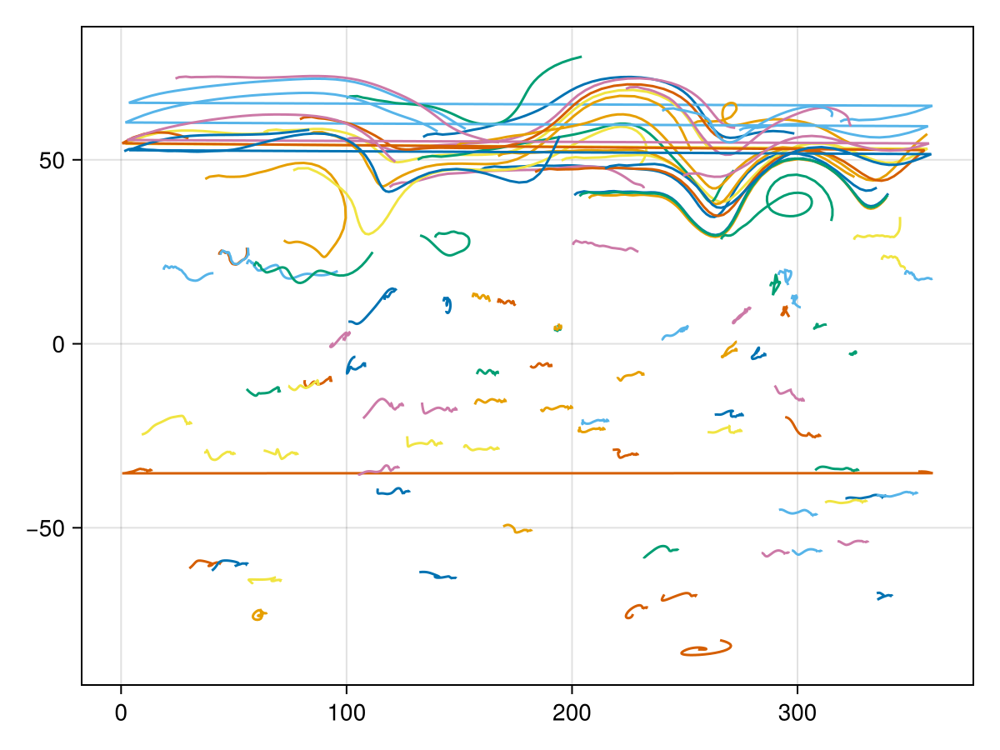
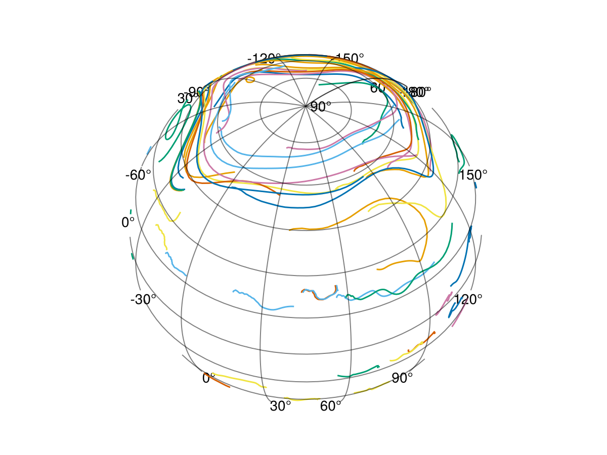

Particle advection
All SpeedyWeather.jl models support particle advection. Particles are objects without mass or volume at a location $\mathbf{x} = (\lambda, \theta, \sigma)$ (longitude $\lambda$, latitude $\theta$, vertical sigma coordinate $\sigma$, see Sigma coordinates) that are moved with the wind $\mathbf{u}(\mathbf{x})$ at that location. The location of the $p$-th particle changes as follows
\[\frac{d \mathbf{x}_p}{d t} = \mathbf{u}(\mathbf{x}_p)\]
This equation applies in 2D, i.e. $\mathbf{x} = (\lambda, \theta)$ and $\mathbf{u} = (u, v)$ or in 3D, but at the moment only 2D advection is supported. In the Primitive equation model the vertical layer on which the advection takes place has to be specified. It is therefore not advected with the vertical velocity but maintains a constant pressure ratio compared to the surface pressure ($\sigma$ is constant).
Discretization of particle advection
The particle advection equation has to be discretized to be numerically solved. While the particle location can generally be anywhere on the sphere, the velocity $\mathbf{u}$ is only available on the discrete grid points of the simulation, such that $\mathbf{u}(\mathbf{x}_p)$ requires an interpolation in order to obtain a velocity at the particles location $\mathbf{x}_p$ to move it around. Dropping the subscript $p$ in favour a subscript $i$ denoting the time step, with Euler forward the equation can be discretized as
\[\mathbf{x}_{i+1} = \mathbf{x}_i + \Delta t~\mathbf{u}_i (\mathbf{x}_i)\]
Meaning we have used the velocity field at both departure time $i$ and departure location $\mathbf{x}_i$ to update a particle's location which makes this scheme first order accurate. But only a single interpolation of the velocity field, which, in fact, is one per dimension, is necessary. Note that the time step $\Delta t$ here and the time step to solve the dynamics do not have to be identical. We could use a larger time step for the particle advection then to solve the dynamics inside the model, and because the stability criteria for these equations are different, one is encouraged to do so. Also because the particles are considered passive, meaning that their location does not influence the other prognostic variables.
We can write down a more accurate scheme at the cost of a second interpolation step. The Heun method, also called predictor-corrector is 2nd order accurate and uses an average of the velocity at departure time $i$ and location $\mathbf{x}_i$ and at a (predicted meaning preliminary) arrival point $x^\star_{i+1}$ and arrival time $i+1$.
\[\begin{aligned} \mathbf{x}^\star_{i+1} &= \mathbf{x}_i + \Delta t~\mathbf{u}_i (\mathbf{x}_i) \\ \mathbf{x}_{i+1} &= \mathbf{x}_i + \frac{\Delta t}{2}~\left( \mathbf{u}_i (\mathbf{x}_i) + \mathbf{u}_{i+1} (\mathbf{x}^\star_{i+1})\right) \end{aligned}\]
Because we don't have $\mathbf{u}_{i+1}$ available at time $i$, we perform this integration retrospectively, i.e. if the other model dynamics have reached time $i+1$ then we let the particle advection catch up by integrating them from $i$ to $i+1$. This, however, requires some storage of the velocity $\mathbf{u}_i$ at the previous advection time step. Remember that this does not need to be the time step for the momentum equations and could be much further in the past. We could either store $\mathbf{u}_i$ as a grid-point field or only its interpolated values. In the case of fewer particles than grid points the latter is more efficient and this is also what we do in SpeedyWeather. Let square brackets $[]$ denote an interpolation then we perform the interpolation $\mathbf{u}_i [\mathbf{x}_i]$ that's required to step from $i$ to $i+1$ already on the time step that goes from $i-1$ to $i$.
\[\begin{aligned} \mathbf{x}^\star_{i+1} &= \mathbf{x}_i + \Delta t~\mathbf{u}_i (\mathbf{x}_i) \\ \mathbf{x}_{i+1} &= \mathbf{x}_i + \frac{\Delta t}{2}~\left( \mathbf{u}_i (\mathbf{x}_i) + \mathbf{u}_{i+1} [\mathbf{x}^\star_{i+1}]\right) \\ \mathbf{u}_{i+1} (\mathbf{x}_{i+1}) &= \mathbf{u}_{i+1} [\mathbf{x}_{i+1}] \end{aligned}\]
Denoted here as the last line with the left-hand side becoming the last term of the first line in the next time step $i+1 \to i+2$. Now it becomes clearer that there are two interpolations required on every time step.
We use for horizontal coordinates degrees, such that we need to scale the time step $\Delta$ with $\frac{360˚}{2\pi R}$ (radius $R$) for advection in latitude and with $\frac{360˚}{2\pi R \cos(\theta)}$ for advection in longitude (because the distance between meridians decreases towards the poles). We move the division by the radius conveniently into the time step as are also the momentum equations scaled with the radius, see Radius scaling.
Technically, a particle moved with a given velocity follows a great circle in spherical coordinates. This means that
\[\theta_{i+1} \approx \theta_i + \frac{\Delta t}{R} \frac{360}{2\pi} v_i\]
becomes a bad approximation when the time step and or the velocity are large. However, for simplicity and to avoid the calculation of the great circle we currently do use this to move particles with a given velocity. We essentially assume a local cartesian coordinate system instead of the geodesics in spherical coordinates. However, for typical time steps of 1 hour and velocities not exceeding 100 m/s the error is not catastrophic and can be reduced with a shorter time step. We may switch to great circle calculations in future versions.
Create a particle
So much about the theory
A Particle at location 10˚E and 30˚N (and $\sigma = 0$) can be created as follows,
using SpeedyWeather
p = Particle(lon=10, lat=30, σ=0)
p = Particle(lon=10, lat=30)
p = Particle(10, 30, 0)
p = Particle(10, 30)Particle{Float32, active}( 10.00˚E, 30.00˚N, σ = 0.00)All of the above are equivalent. Unless a keyword argument is used, longitude is the first argument, followed by latitude (necessary), followed by $\sigma$ (can be omitted). Longitudes can be -180˚E to 180˚E or 0 to 360˚E, latitudes have to be -90˚N to 90˚N. You can create a particle with coordinates outside of these ranges (and no error or warning is thrown) but during particle advection they will be wrapped into [0, 360˚E] and [-90˚N, 90˚N], using the mod(::Particle) function, which is similar to the modulo operator but with the second argument hardcoded to the coordinate ranges from above, e.g.
mod(Particle(lon=-30, lat=0))Particle{Float32, active}(330.00˚E, 0.00˚N, σ = 0.00)which also takes into account pole crossings which adds 180˚ in longitude
mod(Particle(lon=0, lat=100))Particle{Float32, active}(180.00˚E, 80.00˚N, σ = 0.00)as if the particle has moved across the pole. That way all real values for longitude and latitude are wrapped into the reference range [0, 360˚E] and [-90˚N, 90˚N].
Particles are implemented as immutable struct, meaning you cannot change their position by particle.lon = value. You have to think of them as integers or floats instead. If you have a particle p and you want to change its position to the Equator for example you need to create a new one new_particle = Particle(p.lon, 0, p.σ).
By default Float32 is used, but providing coordinates in Float64 will promote the type accordingly. Also by default, particles are active which is indicated by the 2nd parametric type of Particle, a boolean. Active particles are moved following the equation above, but inactive particles are not. You can activate or deactivate a particle like so
deactivate(p)Particle{Float32, inactive}( 10.00˚E, 30.00˚N, σ = 0.00)and so
activate(p)Particle{Float32, active}( 10.00˚E, 30.00˚N, σ = 0.00)or check its activity by active(::Particle) returning true or false. The zero-element of the Particle type is
zero(Particle)Particle{Float32, active}( 0.00˚E, 0.00˚N, σ = 0.00)and you can also create a random particle which uses a raised cosine distribution in latitude for an equal area-weighted uniform distribution over the sphere
rand(Particle{Float32}) # specify number format
rand(Particle{Float32, true}) # and active/inactive
rand(Particle) # or not (defaults used instead)Particle{Float32, active}(167.38˚E, 37.69˚N, σ = 0.03)Advecting particles
The Particle type can be used inside vectors, e.g.
zeros(Particle{Float32}, 3)
rand(Particle{Float64}, 5)5-element Vector{Particle{Float64}}:
Particle{Float64, active}(207.92˚E, -76.82˚N, σ = 0.55)
Particle{Float64, active}(114.71˚E, 0.97˚N, σ = 0.40)
Particle{Float64, active}( 1.55˚E, -51.92˚N, σ = 0.00)
Particle{Float64, active}( 42.96˚E, -50.28˚N, σ = 0.12)
Particle{Float64, active}( 58.91˚E, 0.49˚N, σ = 0.55)which is how particles are represented inside a SpeedyWeather Simulation. Note that we have not specified whether the particles inside these vectors are active (e.g. Particle{Float32, true}) or inactive (e.g. Particle{Float64, false}) because that would generally force all particles in these vectors to be either active or inactive as specified such that
v = zeros(Particle{Float32, false}, 3)
v[1] = Particle(lon = 134.0, lat = 23) # conversion to inactive Particle{Float32, false}
v3-element Vector{Particle{Float32, false}}:
Particle{Float32, inactive}(134.00˚E, 23.00˚N, σ = 0.00)
Particle{Float32, inactive}( 0.00˚E, 0.00˚N, σ = 0.00)
Particle{Float32, inactive}( 0.00˚E, 0.00˚N, σ = 0.00)would not just convert from Float64 to Float32 but also from an active to an inactive particle. In SpeedyWeather all particles can be activated or deactivated at any time.
First, you create a SpectralGrid with the n_particles keyword
spectral_grid = SpectralGrid(n_particles = 3)SpectralGrid:
├ Spectral: T31 LowerTriangularMatrix{Complex{Float32}}, radius = 6.371e6 m
├ Grid: 48-ring OctahedralGaussianGrid{Float32}, 3168 grid points
├ Resolution: 401km (average)
├ Particles: 3
└ Vertical: 8-level SigmaCoordinatesThen the particles live as Vector{Particle} inside the prognostic variables
model = BarotropicModel(;spectral_grid)
simulation = initialize!(model)
simulation.prognostic_variables.particles3-element Vector{Particle{Float32}}:
Particle{Float32, active}( 86.18˚E, -51.34˚N, σ = 0.32)
Particle{Float32, active}(182.12˚E, -24.97˚N, σ = 0.12)
Particle{Float32, active}(236.11˚E, 18.56˚N, σ = 0.68)Which are placed in random locations (using rand) initially. In order to change these (e.g. to set the initial conditions) you do
simulation.prognostic_variables.particles[1] = Particle(lon=-120, lat=45)
simulation.prognostic_variables.particles3-element Vector{Particle{Float32}}:
Particle{Float32, active}(-120.00˚E, 45.00˚N, σ = 0.00)
Particle{Float32, active}(182.12˚E, -24.97˚N, σ = 0.12)
Particle{Float32, active}(236.11˚E, 18.56˚N, σ = 0.68)which sets the first particle (you can think of the index as the particle identification) to some specified location, or you could deactivate a particle with
first_particle = simulation.prognostic_variables.particles[1]
simulation.prognostic_variables.particles[1] = deactivate(first_particle)
simulation.prognostic_variables.particles3-element Vector{Particle{Float32}}:
Particle{Float32, inactive}(-120.00˚E, 45.00˚N, σ = 0.00)
Particle{Float32, active}(182.12˚E, -24.97˚N, σ = 0.12)
Particle{Float32, active}(236.11˚E, 18.56˚N, σ = 0.68)To actually advect these particles inside a SpeedyWeather simulation we have to create a ParticalAdvection2D instance that lets you control the time step used for particle advection and which vertical layer to use in the 3D models.
particle_advection = ParticleAdvection2D(spectral_grid, layer = 1)ParticleAdvection2D{Float32} <: SpeedyWeather.AbstractParticleAdvection
├ every_n_timesteps::Int64 = 8
├ layer::Int64 = 1
└ Δt::Base.RefValue{Float32} = Base.RefValue{Float32}(0.0f0)we choose the first (=top-most) layer although this is the default anyway. Now we can advect our three particles we have defined above
model = BarotropicModel(;spectral_grid, particle_advection)
simulation = initialize!(model)
simulation.prognostic_variables.particles3-element Vector{Particle{Float32}}:
Particle{Float32, active}(281.54˚E, 32.71˚N, σ = 0.56)
Particle{Float32, active}(261.19˚E, -45.29˚N, σ = 0.02)
Particle{Float32, active}( 9.60˚E, -23.49˚N, σ = 0.56)Which are the initial conditions for our three particles. After 10 days of simulation they have changed
run!(simulation, period=Day(10))
simulation.prognostic_variables.particles3-element Vector{Particle{Float32}}:
Particle{Float32, active}(289.93˚E, 31.94˚N, σ = 0.56)
Particle{Float32, active}(248.29˚E, -45.17˚N, σ = 0.02)
Particle{Float32, active}(357.70˚E, -23.47˚N, σ = 0.56)Woohoo! We just advected some particles. This is probably not as exciting as actually tracking the particles over the globe and being able to visualise their trajectory which we will do in the next section
Tracking particles
A ParticleTracker is implemented as a callback, see Callbacks, outputting the particle locations via netCDF. We can create it like
using SpeedyWeather
spectral_grid = SpectralGrid(n_particles = 100)
particle_tracker = ParticleTracker(spectral_grid, schedule=Schedule(every=Hour(3)))ParticleTracker{Float32} <: AbstractCallback
├ schedule::Schedule = Schedule <: SpeedyWeather.AbstractSchedule
├ every::Second = 10800 seconds
├ steps::Int64 = 0
├ counter::Int64 = 0
└── arrays: times, schedule
├ file_name::String = particles.nc
├ compression_level::Int64 = 1
├ shuffle::Bool = false
├ keepbits::Int64 = 15
├ n_particles::Int64 = 100
├ netcdf_file::Nothing = nothing
└── arrays: lon, lat, σwhich would output every 3 hours (the default). This output frequency might be slightly adjusted depending on the time step of the dynamics to output every n time steps (an @info is thrown if that is the case), see Schedules. Further options on compression are available as keyword arguments ParticleTracker(spectral_grid, keepbits=15) for example. The callback is then added after the model is created
particle_advection = ParticleAdvection2D(spectral_grid)
model = ShallowWaterModel(;spectral_grid, particle_advection)
add!(model.callbacks, particle_tracker)[ Info: ParticleTracker{Float32} callback added with key callback_61eCwhich will give it a random key too in case you need to remove it again (more on this in Callbacks). If you now run the simulation the particle tracker is called on particle_tracker.every_n_timesteps and it continuously writes into particle_tracker.netcdf_file which is placed in the run folder similar to other NetCDF output. For example, the run id can be obtained after the simulation by model.output.id.
simulation = initialize!(model)
run!(simulation, period=Day(10))
model.output.id"0005"so that you can read the netCDF file with
using NCDatasets
run_id = "run_$(model.output.id)" # create a run_???? string with output id
path = joinpath(run_id, particle_tracker.file_name) # by default "run_????/particles.nc"
ds = NCDataset(path)
ds["lon"]
ds["lat"]lat (100 × 81)
Datatype: Float32 (Float32)
Dimensions: particle × time
Attributes:
units = degrees_east
long_name = latitude
where the last two lines are lazy loading a matrix with each row a particle and each column a time step. You may do ds["lon"][:,:] to obtain the full Matrix. We had specified spectral_grid.n_particles above and we will have time steps in this file depending on the period the simulation ran for and the particle_tracker.Δt output frequency. We can visualise the particles' trajectories with
lon = ds["lon"][:,:]
lat = ds["lat"][:,:]
n_particles = size(lon,1)
using CairoMakie
fig = lines(lon[1, :], lat[1, :]) # first particle only
[lines!(fig.axis, lon[i,:], lat[i,:]) for i in 2:n_particles] # add lines for other particles
# display updated figure
fig
Instead of providing a polished example with a nice projection we decided to keep it simple here because this is probably how you will first look at your data too. As you can see, some particles in the Northern Hemisphere have been advected with a zonal jet and perform some wavy motions as the jet does too. However, there are also some horizontal lines which are automatically plotted when a particles travels across the prime meridian 0˚E = 360˚E. Ideally you would want to use a more advanced projection and plot the particle trajectories as geodetics.
With GeoMakie.jl you can do
using GeoMakie, CairoMakie
fig = Figure()
ga = GeoAxis(fig[1, 1]; dest = "+proj=ortho +lon_0=45 +lat_0=45")
[lines!(ga, lon[i,:], lat[i,:]) for i in 1:n_particles]
figWARNING: Method definition isfinite(Union{GeometryBasics.AbstractPoint{Dim, T} where T where Dim, GeometryBasics.Vec{S, T} where T where S}) in module GeometryBasics at /home/runner/.julia/packages/GeometryBasics/ebXl0/src/fixed_arrays.jl:134 overwritten in module GeoMakie at /home/runner/.julia/packages/GeoMakie/vcMuZ/src/utils.jl:128.
ERROR: Method overwriting is not permitted during Module precompilation. Use `__precompile__(false)` to opt-out of precompilation.